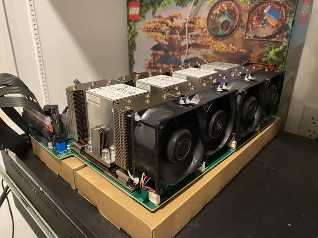

屌丝大模型部署方案+1
SXM2 over PCIe (V100 on AOM-SXMV)
I can’t take credit for this, but I’m probably one of only a handful of people to do it this way. I’m posting more as an exhibition rather than a “It’s so easy, a caveman could do it” guide. Some of the parts are very hard to get, supply is the limiting factor in recreating this IMO. I just thought some folks might find it interesting/cool.
So I saw this idea a couple years ago on STH. The idea was to use an SMX2 GPU daughter board from Supermicro, and plug into a normal computer. The part number is AOM-SXMV, which supports V100 SXM2 GPU modules, which are getting to be VERY cheap. (Note: there also exists a similar board “AOM-SXM2” which only supports P100s, not V100s, be careful about that). The problem with using many SXM2 daughter boards from pretty much every other vendor is that they are hardware locked to their respective platforms and cannot be used on something else. This makes the platforms both old/outdated and overpriced. But the AOM-SXMV is not locked in any way and communicates with its host over normal PCIe. The only “problem” is that the PCIe connector on the board is a proprietary connector. The missing link came when some Chinese vendors started making adapters and PCIe cables to convert this over to normal PCIe. (The board has some Oculink 8i connectors, but GPUs are not visible over those links, I think they’re only used for RDMA). The board takes 4x 8-pin EPS power inputs, NOT VGA/PCIe.
I’ll admit that these boards are very hard to find in the western markets, and if you do, they are usually exorbitantly priced. I’m fortunate to have some experience buying and importing from the Chinese market and was able to buy some things from there (Taobao, Xianyu). You’ll need to be fluent in Chinese to negotiate with sellers, as well as having a reshipper agent in China and the ability to pay in RMB/CNY.
So the parts list is basically: AOM-SXMV ~$200-$250 USD from Xianyu Custom adapter cables ~$70 USD from Xianyu (Or AOM-SXMV-PIO adapters ~$20, bring your own PCIe extensions) 4x V100 SXM2 16GB ~$175/ea from eBay 4x HP 3U SXM2 heatsinks ~$15/ea from Xianyu, or like 50-100/ea from western markets) 4x VGA to EPS power adapters if you don’t have enough EPS Some kind of fans strapped to the heatsinks
So on the very low end of pricing you can get a 4x V100 setup for ~$1300ish, if you can get the board. But I’ll warn you that a lot of the Chinese vendors are hoarding these boards for selling complete setups at considerable markup.
I was able to get my hands on two boards, and bought everything needed to build out and connected them both to the same system (H11DSi-NT, 2x EPYC 7742) for 8x V100. I also bought a custom case (~$190/ea shipped w/ 1400w PSU) from Xianyu. Yes, two cables are connected via x8 links on the H11DSi, but PCIe is not a limit for my use case. The cases are perfect width for server rack, but no rails available, have to sit them on a shelf.
Pics: First testing: https://imgur.com/a/LOyTK92 Final setup: https://imgur.com/a/mzK3nAb